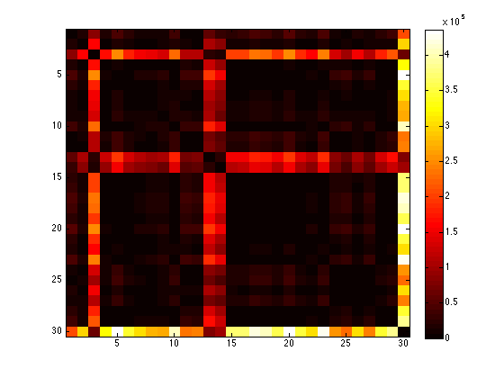

clear all
all_grayscale = [];
all_regular = [];
all_invariant = [];
all_x = [];
all_y = [];
all_z = [];
all_TRI = [];
folder = [];
no_of_img = 121*ones(1,30);
center = 31*ones(30,3);
iorder = 1:30;
center = [center iorder'];
grouplabel = [4 1 1 2 1 2 3 1 1 2 1 1 2 2 1 1 4 1 NaN 1 NaN NaN 1 6 2 4 0 2 5 3];
invariant_with_fung_0 = [];
invariant_with_fung_1 = [];
invariant_with_fung_2 = [];
invariant_with_fung_3 = [];
invariant_with_fung_4 = [];
invariant = [];
regular_with_fung_0 = [];
regular_with_fung_1 = [];
regular_with_fung_2 = [];
regular_with_fung_3 = [];
regular_with_fung_4 = [];
grayscale_with_fung_0 = [];
grayscale_with_fung_1 = [];
grayscale_with_fung_2 = [];
grayscale_with_fung_3 = [];
grayscale_with_fung_4 = [];
folder = [folder ; '../data/fungipod numbers/clipped_actin/1/1'];
folder = [folder ; '../data/fungipod numbers/clipped_actin/1/2'];
folder = [folder ; '../data/fungipod numbers/clipped_actin/1/3'];
folder = [folder ; '../data/fungipod numbers/clipped_actin/2/1'];
folder = [folder ; '../data/fungipod numbers/clipped_actin/2/2'];
folder = [folder ; '../data/fungipod numbers/clipped_actin/2/3'];
folder = [folder ; '../data/fungipod numbers/clipped_actin/2/4'];
folder = [folder ; '../data/fungipod numbers/clipped_actin/3/1'];
folder = [folder ; '../data/fungipod numbers/clipped_actin/4/1'];
folder = [folder ; '../data/fungipod numbers/clipped_actin/4/2'];
folder = [folder ; '../data/fungipod numbers/clipped_actin/4/3'];
folder = [folder ; '../data/fungipod numbers/clipped_actin/4/4'];
folder = [folder ; '../data/fungipod numbers/clipped_actin/5/1'];
folder = [folder ; '../data/fungipod numbers/clipped_actin/5/2'];
folder = [folder ; '../data/fungipod numbers/clipped_actin/6/1'];
folder = [folder ; '../data/fungipod numbers/clipped_actin/6/2'];
folder = [folder ; '../data/fungipod numbers/clipped_actin/6/3'];
folder = [folder ; '../data/fungipod numbers/clipped_actin/6/4'];
folder = [folder ; '../data/fungipod numbers/clipped_actin/6/5'];
folder = [folder ; '../data/fungipod numbers/clipped_actin/6/6'];
folder = [folder ; '../data/fungipod numbers/clipped_actin/7/1'];
folder = [folder ; '../data/fungipod numbers/clipped_actin/7/2'];
folder = [folder ; '../data/fungipod numbers/clipped_actin/7/3'];
folder = [folder ; '../data/fungipod numbers/clipped_actin/7/4'];
folder = [folder ; '../data/fungipod numbers/clipped_actin/7/5'];
folder = [folder ; '../data/fungipod numbers/clipped_actin/8/1'];
folder = [folder ; '../data/fungipod numbers/clipped_actin/8/2'];
folder = [folder ; '../data/fungipod numbers/clipped_actin/8/3'];
folder = [folder ; '../data/fungipod numbers/clipped_actin/8/4'];
folder = [folder ; '../data/fungipod numbers/clipped_actin/8/5'];
row_no = 1;
voxeldim = 0.414;
spacing = [0.414 0.414 0.414];
no_of_radii = 4;
radius_of_yeast = 10*voxeldim;
for q = 1:size(folder,1)
check = 1;
while check == 1
if(row_no <= size(center,1) && center(row_no,4) == q)
[temp_x, temp_y, temp_z, temp_grayscale, temp_regular, temp_invariant, temp_TRI] ...
= calculate(center(row_no,1:3), folder(q,:), voxeldim, no_of_img(q), spacing, no_of_radii, radius_of_yeast);
invariant = cat(3, invariant, temp_invariant);
row_no = row_no + 1;
else
check = 0;
end
end
end
all = invariant;
conf_all = squeeze(all)';
all_dist= dist2(conf_all,conf_all);
figure, imagesc(all_dist), colorbar, colormap hot, title ''

sortall= [grouplabel' center conf_all];
sortrows(sortall, 1);
nan_location = find(isnan(grouplabel));
sortall(nan_location,:) = [];
trainingSetclean = sortall(:, 6:end);
labelclean = sortall(:,1);
sizeTraining = size(trainingSetclean,1);
label = [];
for i=1:sizeTraining
test = trainingSetclean(i,:);
training = trainingSetclean;
training(i,:) = [];
group = labelclean;
group(i,:) = [];
label(i) = knnclassify(test, training, group);
display([num2str(i) 'th test case labeled as ' num2str(label(i)) ', true label is ' num2str(labelclean(i))]);
end
classrate = sum((label' - labelclean)==0)/size(labelclean,1)
1th test case labeled as 2, true label is 4
2th test case labeled as 3, true label is 1
3th test case labeled as 2, true label is 1
4th test case labeled as 2, true label is 2
5th test case labeled as 1, true label is 1
6th test case labeled as 2, true label is 2
7th test case labeled as 1, true label is 3
8th test case labeled as 3, true label is 1
9th test case labeled as 2, true label is 1
10th test case labeled as 4, true label is 2
11th test case labeled as 1, true label is 1
12th test case labeled as 1, true label is 1
13th test case labeled as 2, true label is 2
14th test case labeled as 1, true label is 2
15th test case labeled as 1, true label is 1
16th test case labeled as 1, true label is 1
17th test case labeled as 1, true label is 4
18th test case labeled as 4, true label is 1
19th test case labeled as 1, true label is 1
20th test case labeled as 1, true label is 1
21th test case labeled as 1, true label is 6
22th test case labeled as 0, true label is 2
23th test case labeled as 2, true label is 4
24th test case labeled as 2, true label is 0
25th test case labeled as 2, true label is 2
26th test case labeled as 2, true label is 5
27th test case labeled as 1, true label is 3
classrate =
0.4074